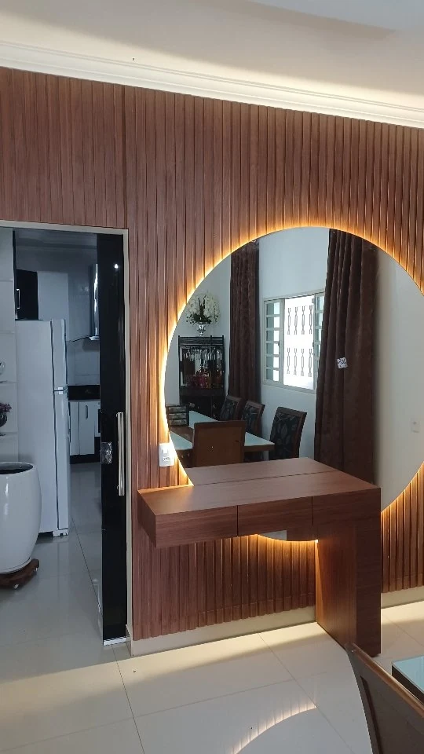
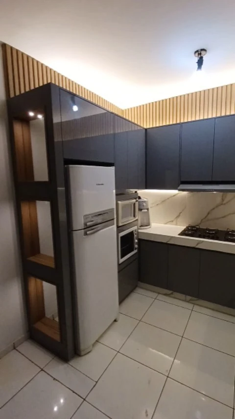
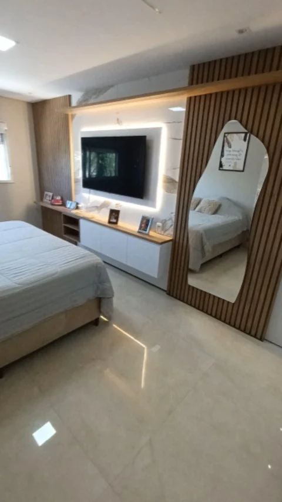
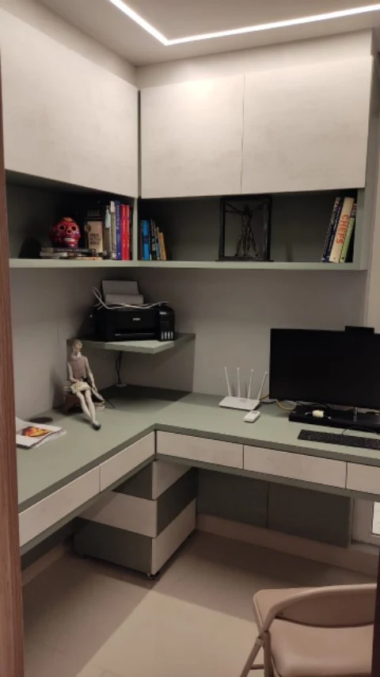
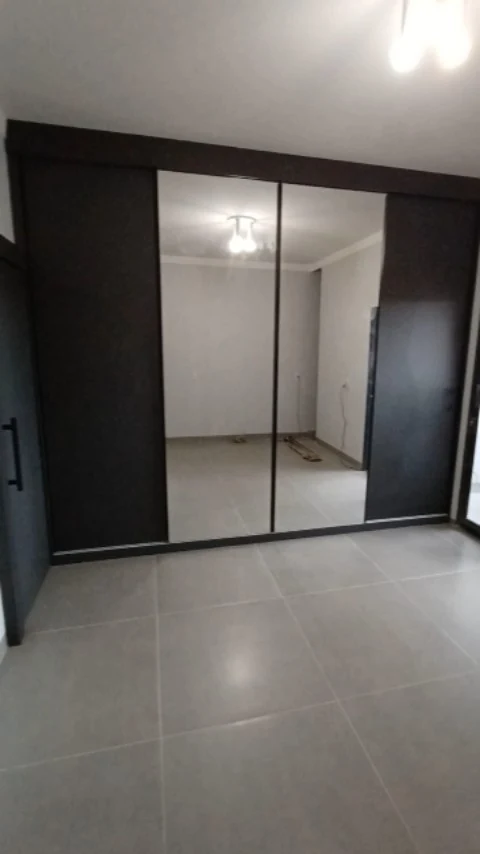
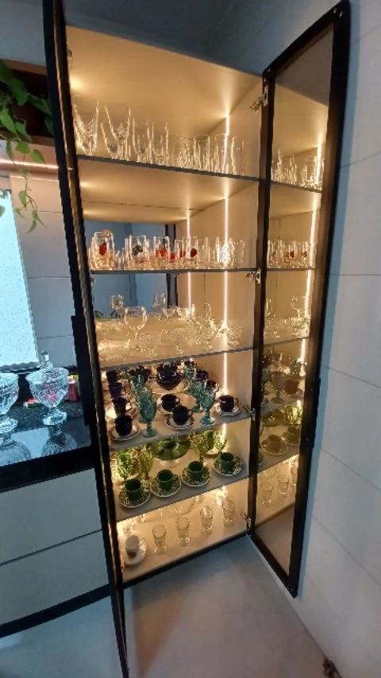
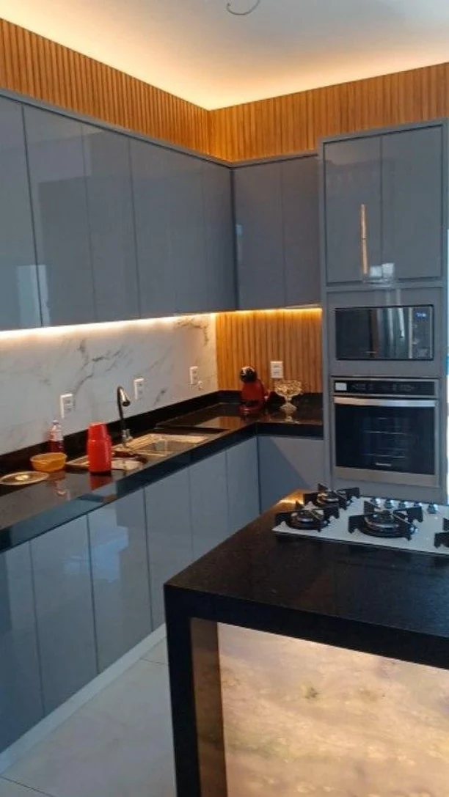
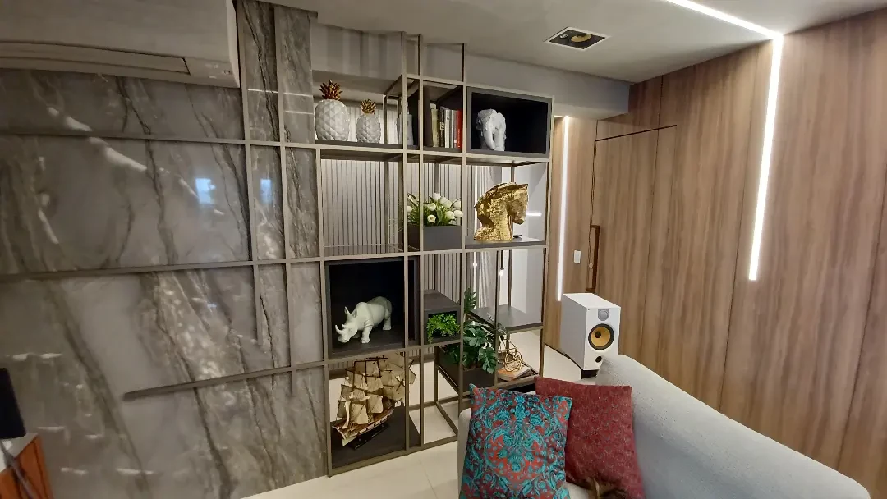
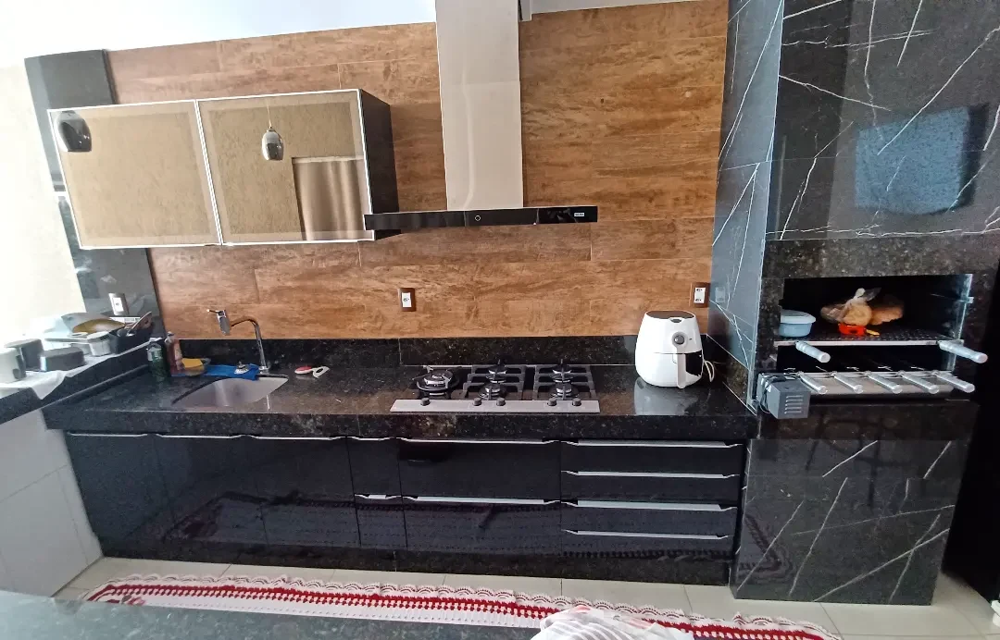

Luz, textura e espaço para viver.
Cristaleiras que iluminam, armários que organizam e bancadas que aproximam. Explore o trabalho da LS de perto.

Do vidro ao ripado, cada encontro importa.
A luz aparece dentro da cristaleira, atrás do espelho e sob o armário aéreo. Nos registros da LS, ela acompanha os materiais e ajuda a marcar cada espaço.
Há cozinhas em cinza, quartos com espelho e bancadas em L. Escolha uma referência pelo detalhe que chama sua atenção e compartilhe a ideia com a equipe.
Ver materiais e ambientesA luz encontra
a marcenaria.
Dez referências entre cristaleiras, cozinhas, quartos e uma bancada de trabalho. Veja o que faz sentido para sua casa.
Bancada entre cristaleiras
Gavetas verdes, portas de vidro e ripado amadeirado encontram a luz linear.


Espelho redondo e ripado
Bancada suspensa e luz em volta do espelho em um canto de passagem.


Cozinha com torre lateral
Armários cinza, nicho para forno e uma torre aberta junto à geladeira.


Painel com penteadeira espelhada
Ripado amadeirado, rack suspenso e espelho alto se integram ao quarto.


Bancada em L para trabalhar
Armários altos claros e nichos escuros deixam a mesa livre na parte inferior.


Armário grafite com espelho
Portas em tom escuro e espelhos altos organizam a parede do quarto.


Cristaleira com luz por dentro
Prateleiras de vidro e garrafas recebem iluminação ao longo do perfil escuro.


Cozinha cinza e luz contínua
Portas altas, torre de fornos e bancada recebem uma linha de iluminação sob o aéreo.


Estante que divide sem fechar
Perfis leves, nichos e fundos alternados deixam a sala se conectar ao espaço ao lado.


Cozinha escura com portas de vidro
Frentes pretas e amadeiradas acompanham os nichos e a bancada da cozinha.
Outros ângulos e detalhes estão no perfil da loja.
Explorar o InstagramO detalhe que você gostou pode ser o começo.
Guarde a referência e conte onde ela entraria na sua casa. Medidas, fotos e usos ajudam a dar direção à conversa.
Vidro e iluminação
Observe os perfis das cristaleiras e a posição das luzes. Escolha a referência que mais combina com o ambiente que você imagina.
Cores e acabamentos
Verde, cinza, preto ou amadeirado: os registros mostram combinações diferentes. As opções para seu projeto podem ser conversadas com a LS.
Como o espaço funciona
O lugar da geladeira, o canto da mesa e a circulação do quarto entram na conversa junto com as medidas.
Vamos pensar no seu espaço?
Escolha uma referência, acrescente as medidas que já tem e conte o que precisa guardar. A mensagem abaixo fica pronta para você revisar.